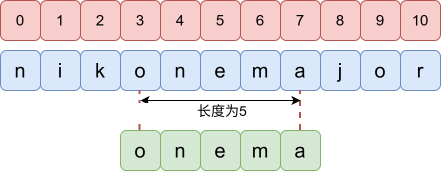
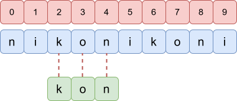

在 C++ 中，字符串可以理解为 一串字符组成的序列。
例如：
"hello"
"noip2026"
"DawnOJ"
那么如何来存储字符串呢？容易想到前面学习过的 数组。我们只需要开一个字符类型(char)的数组即可。
例如：char a[]="hello";
但此时需要注意，字符数组表示的字符串会以 '\0' 结尾，'\0' 表示空字符。
xxxxxxxxxx21char a[]="hello";2cout<<sizeof(a);//输出6
但是这种方式存储字符串，操作不太灵活且存在安全隐患。所以我们推荐使用标准库提供的 string 类来处理字符串。
使用 string 需要增加头文件 #include<string> 或万能头
直接定义
string s;
定义并赋初值
string s="hello";
重复字符定义
string s=string(5,'a');//s="aaaaa"
xxxxxxxxxx21string s;2cin>>s;cin读入遇到 空格 与 回车 会结束。
如果字符串中包含空格，就需要整行读入
xxxxxxxxxx31string s;2cin>>s;3getline(cin,s);温馨提示：如果遇到getline前使用了cin，那么就需要再使用getline前，加上一句 cin.ignore();
xxxxxxxxxx51int n;2cin>>n;3cin.ignore();4string s;5getline(cin,s);
直接使用 cout 输出或循环遍历依次输出。
与数组一样，字符串也可以使用下标直接获取每个位置的字符。
例如：string s="showball";那么 s[2]='o'。
我们先使用 s.size() 获取字符串的长度，然后使用 for 循环遍历即可。
注意循环下标从
xxxxxxxxxx61string s;2cin>>s;3int n=s.size();//养成习惯，每次遍历前将字符串长度存下来4for(int i=0;i<n;i++){5 cout<<s[i]<<" ";6}
思路：
字符串中存在空格，需要使用 getline 整行读入。 接下来遍历字符串判断是否是数字字符即可。
判断数字字符：'0'<=s[i]&&s[i]<='9'。
代码：
x
1
3using namespace std;4
5int main(){6 string s;7 getline(cin,s);8 int n=s.size(),ans=0;9 for(int i=0;i<n;i++){10 if('0'<=s[i]&&s[i]<='9') ans++;11 } 12 cout<<ans;13 return 0;14}
思路：
字符串偏移经典题目，把字符看成对应数字，直接对数字进行操作，然后再把数字转回字符即可。
涉及到
代码：
x
1
3using namespace std;4
5int main(){6 string s;7 int n;8 cin>>n>>s;9 int m=s.size();10 for(int i=0;i<m;i++){11 s[i]=char('a'+(s[i]-'a'+n)%26);12 }13 cout<<s<<"\n";14 return 0;15}
字符串支持 + 进行拼接
xxxxxxxxxx31string s="hello";2s+=" world";3cout<<s;//hello world;并且也支持拼接字符
xxxxxxxxxx31string s="abc";2s+='d';3cout<<s;//abcd;
s.substr(pos,len) 函数能够截取字符串 s 从 pos 开始长度为 len 的一部分，(即子串)。
用法：
s.substr(起始下标, 截取长度);
例如：
xxxxxxxxxx21string s="nikonemajor";2cout<<s.substr(3,5);//onema
如果没有填写第二个参数，默认直接截取到字符串结尾。
x
1string s="fazeclan";2cout<<s.substr(2);//zeclan
s.insert(pos,t) 函数能够在字符串 s 的 pos 前插入另一个字符串 t 。
例如：
x
1string s="nik0major";2string t="ne";3s.insert(4,t);4cout<<s;//nik0nemajor
s.erase(pos,len) 函数能够删除字符串 s 从 pos 开始长度为 len 的一部分，(即子串)。
用法：
s.erase(起始下标, 删除长度);
例如：
x
1string s="nikonemajor";2s.erase(3,5);3cout<<s;//nikjor
s.find(str) 函数能够查询字符串 str 是否在字符串 s 中出现。
函数会返回子串在字符串中第一次出现的首字母的下标。如果没有出现返回 s.npos。
例如：
xxxxxxxxxx71string s="nikonikoni";2if(s.find("kon")!=s.npos){3 cout<<s.find("kon");4}else{5 cout<<"No\n";6}7//输出2
思路：按照题目要求，依次处理每个操作。
操作 1：使用 + 拼接
操作 2：使用 substr 截取子串
操作 3：使用 insert 插入字符串
操作 4：使用 find 查询字符串
代码：
xxxxxxxxxx1361
3using namespace std;4
5int main(){6 int q;7 cin>>q;8 string s;9 cin>>s;10 while(q--){11 int op,a,b;12 string str;13 cin>>op;14 if(op==1){15 cin>>str;16 s+=str;17 cout<<s<<"\n";18 }else if(op==2){19 cin>>a>>b;20 s=s.substr(a,b);21 cout<<s<<"\n";22 }else if(op==3){23 cin>>a>>str;24 s.insert(a,str);25 cout<<s<<"\n";26 }else{27 cin>>str;28 if(s.find(str)!=s.npos){29 cout<<s.find(str)<<"\n";30 }else{31 cout<<"-1\n";32 }33 }34 }35 return 0;36}
reverse(s.begin(),s.end());
例如：
31string s="aadead";2reverse(s.begin(),s.end());3cout<<s;//daedaa
思路：
回文串正着读与反着读是一样的，那么我们复制一份字符串，然后翻转后进行对比即可。
代码：
xxxxxxxxxx1131
3using namespace std;4
5int main(){6 string s;7 cin>>s;8 string t=s;9 reverse(t.begin(),t.end());10 if(s==t) cout<<"yes";11 else cout<<"no";12 return 0;13}